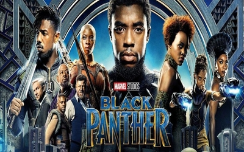

Yasmina Saradar
Future Programmer @ LeWagon
After studying Economics and Politics, I have decided to add a new skill set to my profile by learning to code
at Le Wagon
My favorite things
|  |
Favorite Movie: Black Panther"Black Panther" follows T'Challa who, after the events of "Captain America: Civil War," returns home to the isolated, technologically advanced African nation of Wakanda to take his place as King. |

|
Favorite TV Show: Black MirrorBlack Mirror is an anthology series that taps into our collective unease with the modern world, with each stand-alone episode a sharp, suspenseful tale exploring themes of contemporary techno-paranoia. |
Favorite Singer: Marc KnopflerBest known as the guitarist, singer, and songwriter of Dire Straits, Mark Knopfler has also led a successful solo and session career. |